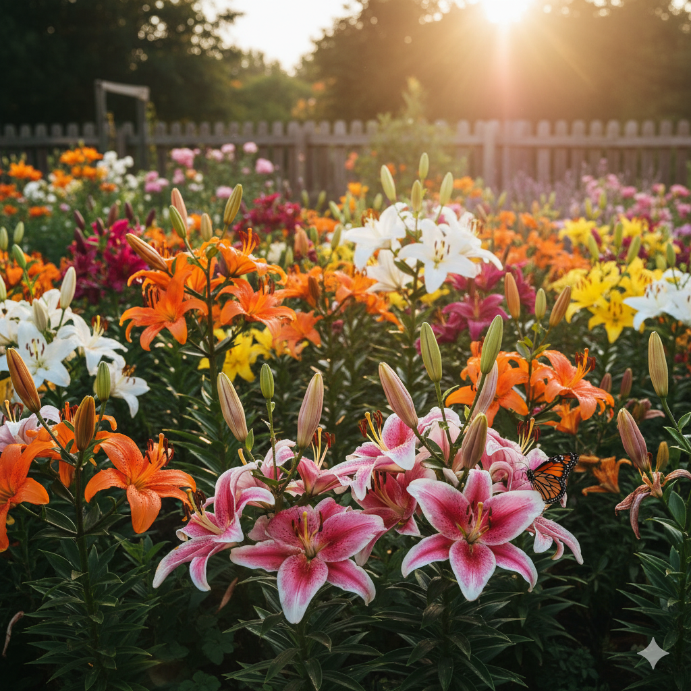
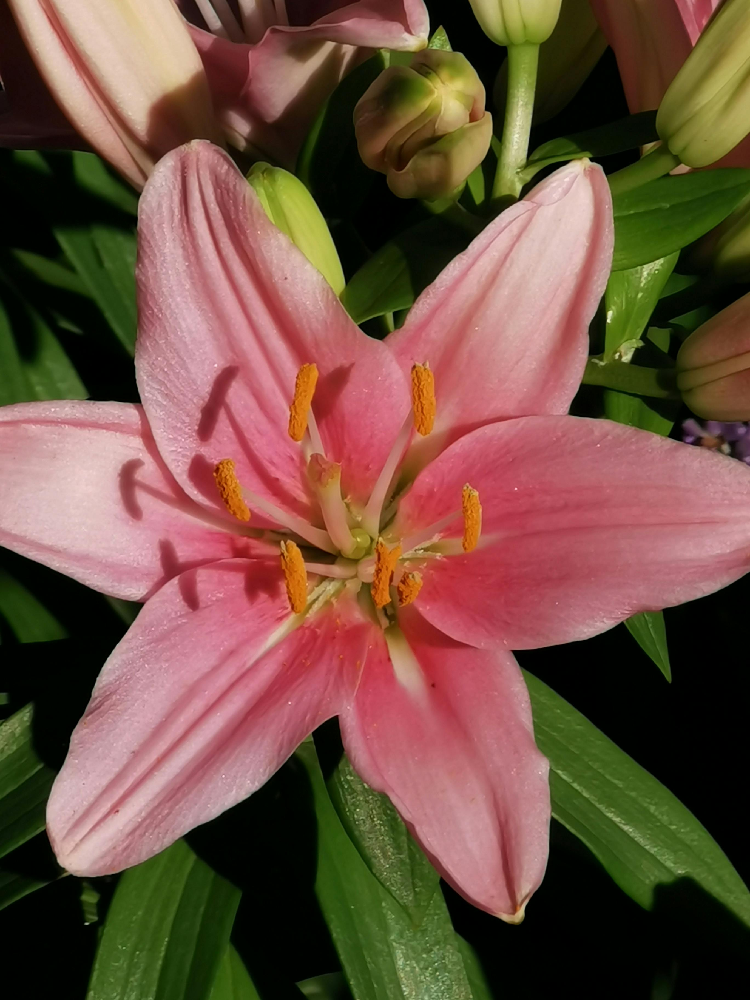
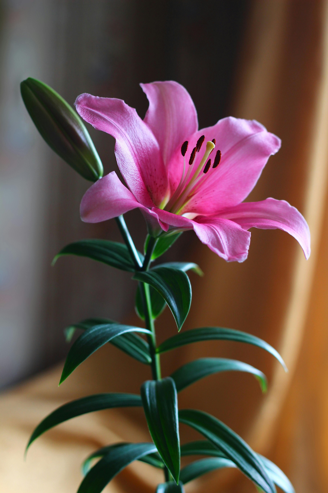
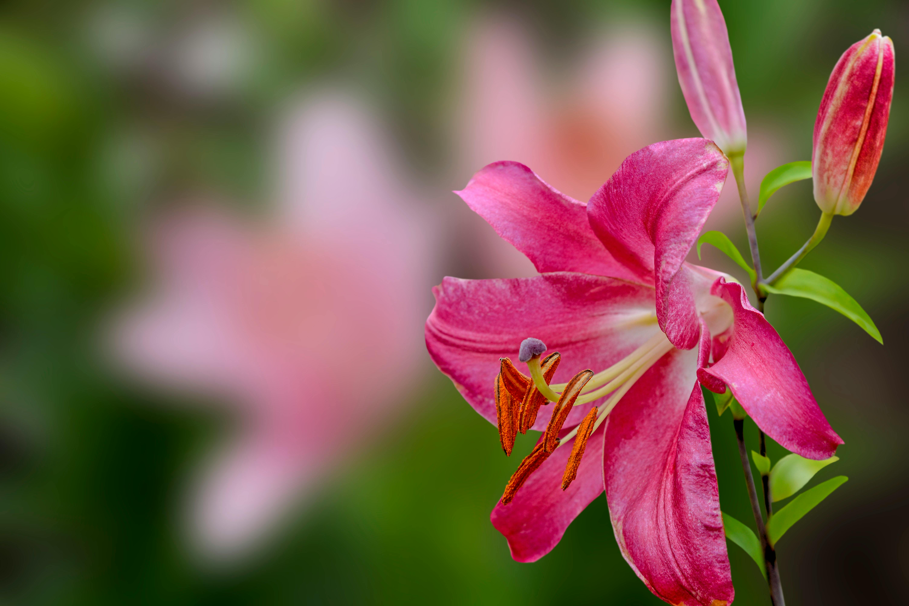

Los lirios componen una de las familias florales más diversas y elegantes del mundo botánico, comenzando por los Lirios Asiáticos, que se distinguen por ser los más tempranos en florecer y por ofrecer una gama cromática vibrante que abarca desde amarillos intensos hasta naranjas y rojos fuego. Aunque carecen de fragancia, sus pétalos firmes y su crecimiento erguido los hacen favoritos para arreglos decorativos. Por otro lado, los Lirios Orientales representan la sofisticación absoluta gracias a sus flores de gran tamaño y su perfume penetrante y dulce que puede llenar habitaciones enteras. Estos suelen florecer a finales del verano, mostrando pétalos recurvados con texturas rugosas y motas de colores contrastantes, generalmente en tonos blancos, rosas y púrpuras. Una variante sumamente popular es el Lirio Longiflorum, comúnmente conocido como azucena o lirio de Pascua, que se reconoce de inmediato por su forma de trompeta alargada y su color blanco puro e inmaculado, simbolizando pureza y elegancia clásica. En un punto intermedio de la ingeniería botánica aparecen los Híbridos OT (Orientales x Trompeta), que heredan la resistencia y la altura de los lirios trompeta junto con la belleza y el aroma de los orientales, resultando en plantas robustas con flores gigantescas que miran hacia afuera. Finalmente, existen los Lirios Martagon, que ofrecen una estética mucho más silvestre y delicada, caracterizados por producir numerosas flores pequeñas que cuelgan hacia abajo con pétalos que se curvan totalmente hacia atrás, dándoles una apariencia similar a un turbante turco, ideales para jardines con un estilo más natural y sombrío.

origenEl origen botánico de los lirios se sitúa en las regiones templadas del hemisferio norte, abarcando gran parte de Asia, Europa y América del Norte. Estas flores, pertenecientes al género Lilium, han sido cultivadas desde hace más de tres mil años, apareciendo en frescos de la civilización minoica en Creta y en jeroglíficos del Antiguo Egipto como símbolos de soberanía y divinidad. En la mitología griega, su creación se atribuía a la diosa Hera, mientras que en la tradición cristiana el lirio blanco se convirtió en el emblema de la pureza y la Virgen María. En cuanto al lirio rosado, su origen es más contemporáneo y está vinculado principalmente a la hibridación técnica. La mayoría de los ejemplares rosados que conocemos hoy provienen del cruce de variedades orientales y asiáticas, destacando especialmente el famoso lirio "Stargazer", desarrollado a finales de los años 70 para obtener flores más resistentes y con colores vibrantes que miraran hacia el cielo. Mientras que el lirio blanco carga con una historia mística y religiosa, el lirio rosado se ha consolidado en la cultura moderna como un símbolo de feminidad, prosperidad y afecto, siendo una de las opciones más populares en la floricultura actual debido a su elegancia y a la intensidad de su fragancia en las variedades orientales.



Los lirios son plantas fascinantes que esconden secretos curiosos más allá de su evidente belleza. Una de las particularidades más sorprendentes es que son flores comestibles en diversas culturas; en China, por ejemplo, los bulbos de ciertas variedades se han consumido durante siglos, utilizándose en sopas y guisos por su textura similar a la de las castañas de agua o las patatas. Sin embargo, esta característica convive con un peligro extremo para las mascotas, ya que el polen y los pétalos son altamente tóxicos para los gatos, pudiendo causarles insuficiencia renal grave con solo ingerir una pequeña cantidad. Otro dato relevante es su capacidad de comunicación visual. El polen de los lirios es extremadamente pegajoso y posee colores vibrantes como el naranja o el marrón para atraer específicamente a polinizadores como abejas y mariposas, aunque para los humanos representa un desafío debido a las manchas difíciles de quitar que deja en la ropa. Además, existe una distinción botánica importante: muchos ejemplares famosos como el lirio de los valles o el lirio de agua no pertenecen realmente a la familia *Liliaceae*, lo que significa que técnicamente no son lirios auténticos a pesar de compartir el nombre popular. Finalmente, estas flores poseen una longevidad notable tanto en la naturaleza como en el arte. Se han encontrado representaciones de lirios en excavaciones de la civilización minoica que datan de hace más de 3500 años, lo que los convierte en una de las plantas ornamentales documentadas más antiguas del mundo. En el jardín, son conocidos por su resistencia, ya que los bulbos pueden permanecer bajo tierra durante inviernos gélidos y renacer con fuerza cada primavera, simbolizando para muchas culturas la idea de la vida eterna y el renacimiento continuo.